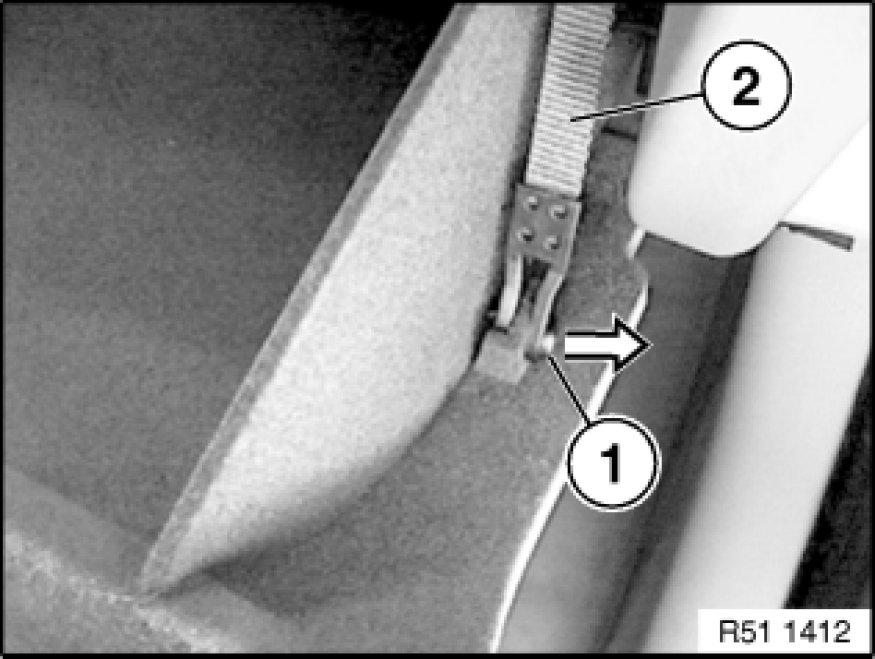

51 16 360 Removing and Installing Right Glove Box
51 16 360 - Removing and installing right glovebox

Note:
Open glovebox.
Unclip pin (1) from retaining strap (2).

Unclip pin (1) from shock absorber (2).
Note:
Close glovebox (3) and secure against falling out.
Release screws (1) and remove counter-support (2).
Open glovebox (3) and remove.
Installation:
Make sure counter-support (1) is correctly seated on chamfered faces of shaft (2).
If necessary, turn shaft (2) accordingly.